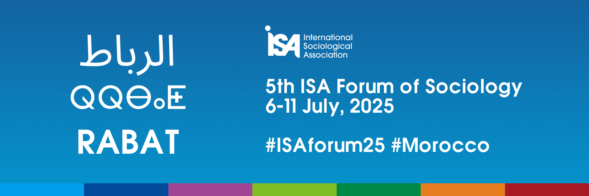

Knowing Justice in the Anthropocene
The 5th ISA Forum of Sociology will take place in Rabat, Morocco on July 6-11, 2025. This is the first ISA Forum to be held in the region and specifically in a country that is known for being at the crossroads of civilizations spanning the Mediterranean, the Middle East and Africa. This unique geographic location, and the campus of Mohammed V University where we will be hosted, is the perfect setting for the intense intellectual debates that are foreseen around the theme “Knowing Justice in the Anthropocene”. The dates of the Forum provide us with the opportunity to engage these debates in our Forum and in a sociological film festival that will be open to the public, just before the city will turn its gaze from sociology to football as host of the 2025 Africa Cup of Nations.
The Forum will bring together sociologists from around the world to unpack this complex theme. Our point of departure lies in the recognition of the Anthropocene and the environmental concerns that accompany it. This word entered our lexicon at the turn of the Millennium when geologists first began to identify what they considered to be irreversible geological traces of human societies on the planet. In March 2024, the ‘scientists’ (according to a New York Times reporter) decided that no, we were not really in a new geological epoch. But the journalist noted that the term had already gained so much importance in anthropology and history that it will most likely stay relevant in societies. This situation of contested knowledges is precisely what we will tackle in Rabat.
What does it mean to “know” in the context of the Anthropocene? Whose knowledge counts? What forms of knowing (understood in its feminist and relational sense) are prioritized, and with what consequences, in societal change? While some sub-disciplines have been actively contributing to academic and public debates, sociology writ large has not been at the center of these debates regarding the conditions of living with and in the Anthropocene. How might engaging the sociological imagination in discussions of the Anthropocene better equip sociologists and citizens to contribute to these public debates about our individual and collective capacities to live together in such an epoch?
This brings us to the question of justice. How do we know what is fair and just? Can we forge new understandings of justice for the Anthropocene? What can sociology contribute to how we know justice among knowledges (ontological and epistemic justice) or about aspects of our social worlds, such as environmental justice, legal justice, transitional justice, land justice, water justice, interspecies justice, racial justice, ethnic justice, or gender justice? What new questions are opened about these types of relations when the conditions of the Anthropocene are taken seriously?
This broad theme provides a space for dialogue within and across ISA’s 67 Research Committees (RCs), Working Groups (WGs), and Thematic Groups (TGs). We invite all sociologists from all walks of life and all corners of the earth to join us in Rabat in 2025!